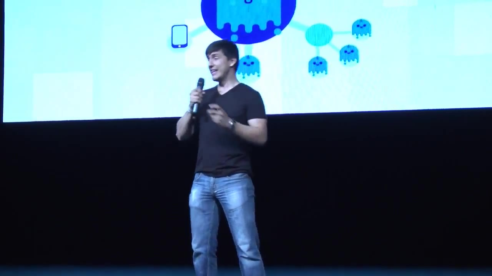
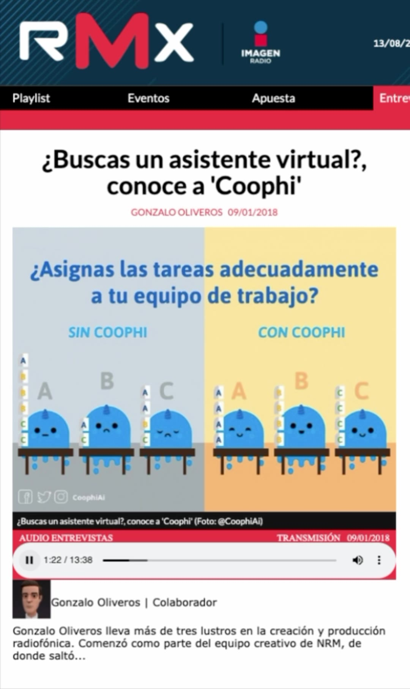
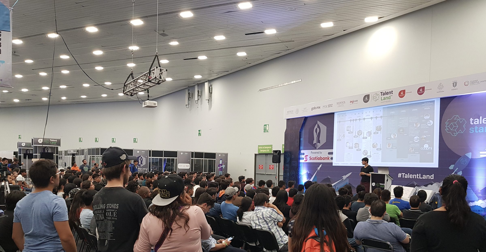
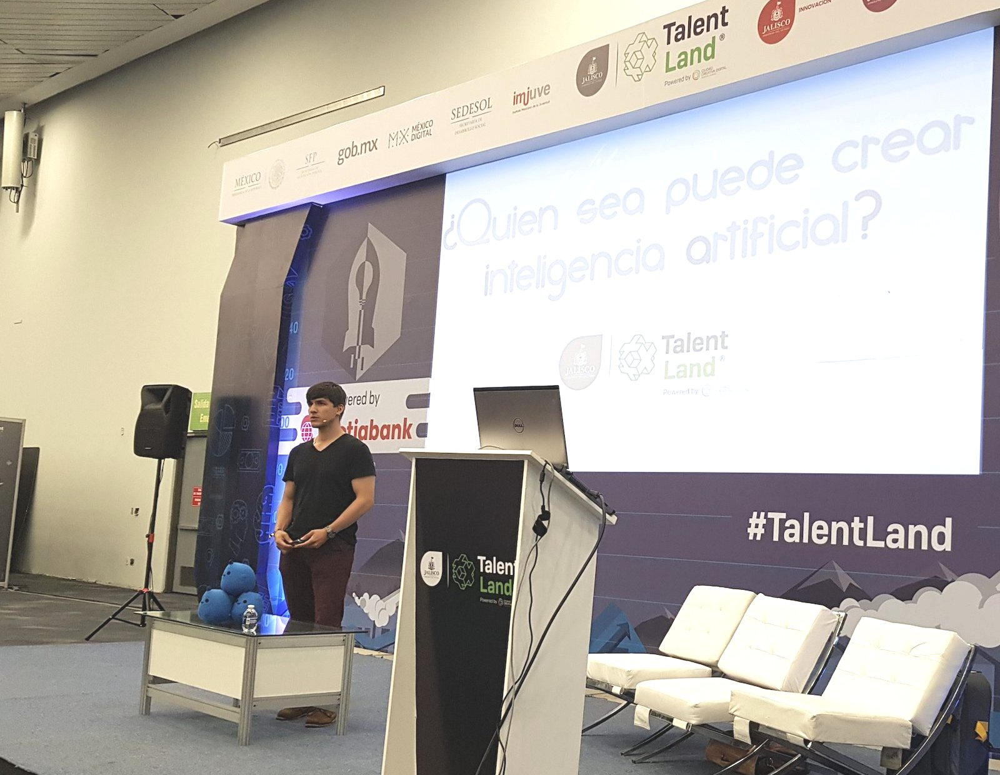

En público
Desde 2017 que comenzamos a comunicar lo que estábamos haciendo, teníamos la visión de que la IA iba a ser accesible para todos, tanto en la vida diaria como en sus trabajos. Comunicábamos cómo estaba siendo creada, entrenada y facilitada para que cualquier persona pudiera utilizarla.

Presenta Coophi y hacia dónde ve que va la IA.

2018hablando de IA en radio nacional
«Nosotros lo que estamos haciendo es diseñar una plataforma que introduzca inteligencia artificial, lenguaje natural y análisis de datos.»
«Creemos en el rediseño de la dinámica en la que la gente puede hacer proyectos.»
Jorge Sierra · Imagen Radio · enero de 2018


Sala llena, hablando de cómo se construye IA. La misma charla en dos encuadres: cuánta gente había, y la pregunta que estaba en pantalla.